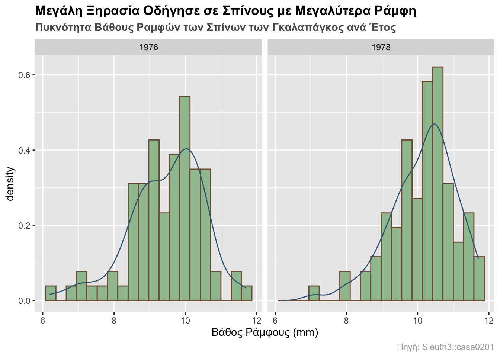

Chapter 31 Greek translation of edav.info/histo
Kassiani Papasotiriou
31.1 Διάγραμμα: Ιστόγραμμα

31.2 Επισκόπηση
Αυτή η ενότητα καλύπτει τον τρόπο δημιουργίας ιστογραμμάτων.
31.3 Σύνοψη
Δώσε μου ένα πλήρες παράδειγμα!
Ορίστε μια εφαρμογή ιστογραμμάτων που εξετάζει το πώς άλλαξαν τα ράμφη των σπίνων των Νησιών Γκαλαπάγκος λόγω εξωτερικών παραγόντων:

Και εδώ είναι ο κώδικας:
library(Sleuth3) # data
library(ggplot2) # plotting
# load data
finches <- Sleuth3::case0201
# finch histograms by year with overlayed density curves
ggplot(finches, aes(x = Depth, y = ..density..)) +
# plotting
geom_histogram(bins = 20, colour = "#80593D", fill = "#9FC29F", boundary = 0) +
geom_density(color = "#3D6480") +
facet_wrap(~Year) +
# formatting
ggtitle("Μεγάλη Ξηρασία Οδήγησε σε Σπίνους με Μεγαλύτερα Ράμφη",
subtitle = "Πυκνότητα Βάθους Ραμφών των Σπίνων των Γκαλαπάγκος ανά Έτος") +
labs(x = "Βάθος Ράμφους (mm)", caption = "Source: Sleuth3::case0201") +
theme(plot.title = element_text(face = "bold")) +
theme(plot.subtitle = element_text(face = "bold", color = "grey35")) +
theme(plot.caption = element_text(color = "grey68"))Για περισσότερες πληροφορίες σχετικά με αυτό το σύνολο δεδομένων, γράψτε ?Sleuth3::case0201 στην κονσόλα.
31.4 Simple examples
Έη, όπα, στάσου! Πολύ απλούστερο παρακαλώ!
Ας χρησιμοποιήσουμε ένα πολύ απλό σύνολο δεδομένων:
31.4.1 Ιστόγραμμα με χρήση βασικής R
Το πλεονέκτημα του ιστογράμματος βασικής R είναι πως μπορεί να ρυθμιστεί εύκολα. Στην πραγματικότητα, το μόνο που χρειάζεσαι για να απεικονίσεις γραφικά τα συγκεκριμένα δεδομένα x είναι η hist(x), αλλά συμπεριλάβαμε λίγο χρώμα και έναν τίτλο ώστε να τα κάνουμε πιο ευπαρουσίαστα.
Πλήρης τεκμηρίωση σχετικά με τη hist() μπορεί να βρεθεί εδώ
31.4.2 Ιστόγραμμα με χρήση ggplot2
# import ggplot
library(ggplot2)
# must store data as dataframe
df <- data.frame(x)
# plot data
ggplot(df, aes(x)) +
geom_histogram(color = "grey", fill = "lightBlue",
binwidth = 5, center = 52.5) +
ggtitle("Ιστόγραμμα ggplot2 για το x")Η εκδοχή με ggplot είναι λίγο πιο περίπλοκη φαινομενικά, αλλά ως αποτέλεσμα παίρνεις μεγαλύτερη ισχύ και έλεγχο. Σημείωση: Όπως φαίνεται παραπάνω, η ggplot αναμένει ένα πλαίσιο δεδομένων, οπότε εάν λαμβάνεις ένα σφάλμα όπου “η R δεν ξέρει τι να κάνει” όπως αυτό:

ggplot dataframe error
βεβαιώσου πως χρησιμοποιείς ένα πλαίσιο δεδομένων.
31.5 Θεωρία
Σε γενικές γραμμές, το ιστόγραμμα είναι μία από πολλές επιλογές για την προβολή συνεχών δεδομένων.
Το ιστόγραμμα μπορεί να δημιουργηθεί εύκολα και γρήγορα. Τα ιστογράμματα είναι λίγο πολύ αυτονόητα: δείχνουν την εμπειρική κατανομή των δεδομένων σου σε ένα σύνολο διαστημάτων. Τα ιστογράμματα μπορούν να χρησιμοποιηθούν σε ανεπεξέργαστα δεδομένα για να δείξουν γρήγορα την κατανομή χωρίς πολλούς χειρισμούς. Χρησιμοποίησε ένα ιστόγραμμα για να πάρεις μια βασική αίσθηση της κατανομής έχοντας ελάχιστες απαιτήσεις για επεξεργασία.
- • Για περισσότερες πληροφορίες σχετικά με τα ιστογράμματα και τις συνεχείς μεταβλητές, δες το Κεφάλαιο 3 του βιβλίου.
31.6 Τύποι ιστογραμμάτων
Χρησιμοποίησε ένα ιστόγραμμα για να δείξεις την κατανομή μιας συνεχούς μεταβλητής. Η κλίμακα του άξονα y μπορεί να αναπαρασταθεί με διάφορους τρόπους για να εκφράσει διαφορετικά αποτελέσματα:
31.6.1 Συχνότητα ή μέτρηση
y = αριθμός τιμών που υπάγονται στην κάθε ζώνη
31.6.2 Ιστόγραμμα σχετικής συχνότητας
y = αριθμός τιμών που υπάγονται στην κάθε ζώνη / συνολικός αριθμός τιμών
31.6.3 Ιστόγραμμα συνολικής συχνότητας
y = συνολικός αριθμός τιμών <= (ή <) του άνω ορίου της ζώνης
31.6.4 Πυκνότητα
y = σχετική συχνότητα / εύρος ζώνης
31.7 Παράμετροι
31.7.1 Όρια ζωνών
Σκέψου τα όρια των ζωνών και εάν ένα σημείο θα πέσει στην αριστερή ή τη δεξιά ζώνη όταν βρίσκεται πάνω στο όριο.
31.7.2 Αριθμός ζωνών
Ο προεπιλεγμένος αριθμός των 30 ζωνών στη ggplot2 δεν είναι πάντα ιδανικός, οπότε σκέψου να τον αλλάξεις εάν τα πράγματα φαίνονται περίεργα. Μπορείς να καθορίσεις το εύρος ρητά με το binwidth ή να δώσεις τον επιθυμητό αριθμό ζωνών με το bins.
# default...note the pop-up about default bin number
ggplot(finches, aes(x = Depth)) +
geom_histogram() +
ggtitle("Προεπιλογή με αναδυόμενο παράθυρο για τον αριθμό ζωνών")Ακολουθούν παραδείγματα αλλαγής των ζωνών με χρήση των δύο τρόπων που περιγράφηκαν παραπάνω:
# using binwidth
p1 <- ggplot(finches, aes(x = Depth)) +
geom_histogram(binwidth = 0.5, boundary = 6) +
ggtitle("Αλλάχθηκε η τιμή του binwidth")
# using bins
p2 <- ggplot(finches, aes(x = Depth)) +
geom_histogram(bins = 48, boundary = 6) +
ggtitle("Αλλάχθηκε η τιμή του bins")
# format plot layout
library(gridExtra)
grid.arrange(p1, p2, ncol = 2)31.7.3 Ευθυγράμμιση ζωνών
Βεβαιώσου ότι οι άξονες αντικατοπτρίζουν τα πραγματικά όρια του ιστογράμματος. Μπορείς να χρησιμοποιήσεις το boundary για να προσδιορίσεις το τέλος οποιασδήποτε ζώνης ή το center για να προσδιορίσεις το κέντρο οποιασδήποτε ζώνης. Η ggplot2 θα μπορέσει να υπολογίσει πού να τοποθετήσει τις υπόλοιπες ζώνες. (Επίσης, παρατήρησε πως όταν το όριο άλλαξε, ο αριθμός των ζωνών μειώθηκε κατά μία. Αυτό συμβαίνει επειδή ως προεπιλογή οι ζώνες είναι κεντραρισμένες και υπερκαλύπτουν (πιο κάτω/ παραπάνω) το εύρος των δεδομένων.)
df <- data.frame(x)
# default alignment
ggplot(df, aes(x)) +
geom_histogram(binwidth = 5,
fill = "lightBlue", col = "black") +
ggtitle("Προεπιλεγμένη Ευθυγράμμιση Ζωνών")# specify alignment with boundary
p3 <- ggplot(df, aes(x)) +
geom_histogram(binwidth = 5, boundary = 60,
fill = "lightBlue", col = "black") +
ggtitle("Ευθ. Ζωνών με χρήση ορίων")
# specify alignment with center
p4 <- ggplot(df, aes(x)) +
geom_histogram(binwidth = 5, center = 67.5,
fill = "lightBlue", col = "black") +
ggtitle("Ευθ. Ζωνών με χρήση κέντρου")
# format layout
library(gridExtra)
grid.arrange(p3, p4, ncol = 2)Σημείωση: Μη χρησιμοποιείς και το boundary και το center για ευθυγράμμιση των ζωνών. Διάλεξε μόνο το ένα.
31.8 Διαδραστικά ιστογράμματα με το ggvis
To πακέτο ggvis δεν βρίσκεται σε εξέλιξη επί του παρόντος, αλλά κάνει ορισμένα πράγματα πολύ καλά, όπως η ενεργή προσαρμογή των παραμέτρων ενός ιστογράμματος κατά την συγγραφή του κώδικα.
Από τη στιγμή που οι εικόνες δε μπορούν να μοιραστούν με knitting (όπως συμβαίνει με άλλα πακέτα, όπως το plotly), παρουσιάζουμε εδώ τον κώδικα, αλλά όχι την έξοδο. Για να τα δοκιμάσεις, αντίγραψε και επικόλλησε σε μια συνεδρία R.
31.8.1 Διαδραστική αλλαγή του εύρου ζώνης
31.8.2 Παράδειγμα ΑΕΠ
31.8.3 Διαδραστική αλλαγή κέντρου
31.8.4 Αλλαγή κέντρου (με τις τιμές δεδομένων που εμφανίζονται)
df <- data.frame(x = c(50, 51, 53, 55, 56, 60, 65, 65, 68),
y = c(.5, .5, .5, .5, .5, .5, .5, 1.5, .5))
df %>% ggvis(~x, ~y) %>%
layer_histograms(fill := "lightcyan", width = 5,
center = input_slider(45, 55, value = 45,
step = 1, label = "center")) %>%
layer_points(fill := "blue", size := 200) %>%
add_axis("x", properties = axis_props(labels = list(fontSize = 20))) %>%
scale_numeric("x", domain = c(46, 72)) %>%
add_axis("y", values = 0:3,
properties = axis_props(labels = list(fontSize = 20)))31.9 Εξωτερικές πηγές
- Τεκμηρίωση του hist: Σελίδα τεκμηρίωσης ιστογράμματος της βασικής R.
- Σκονάκι της ggplot2: Πάντα καλό να το έχεις παραδίπλα.